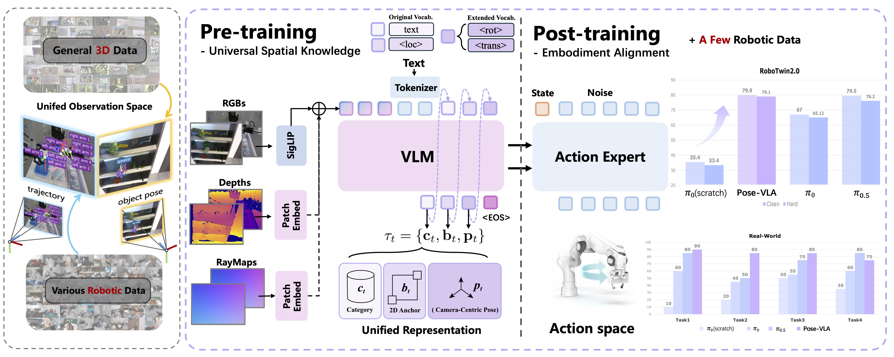
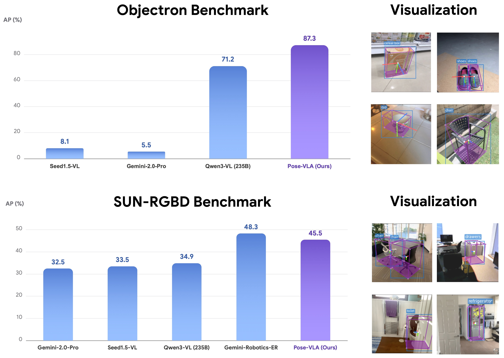
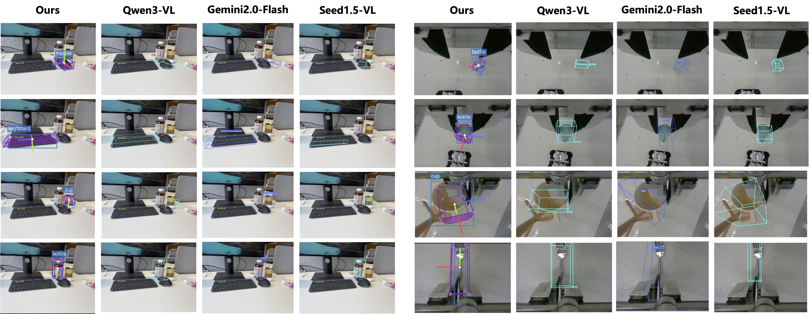
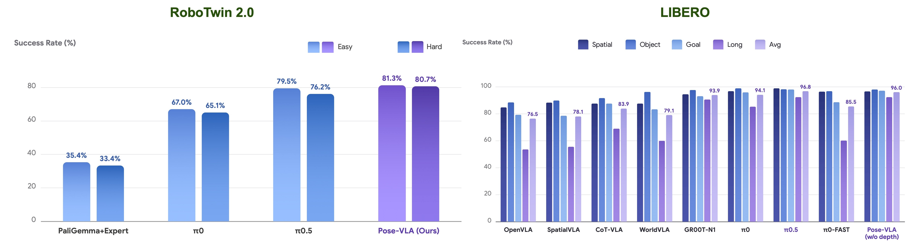
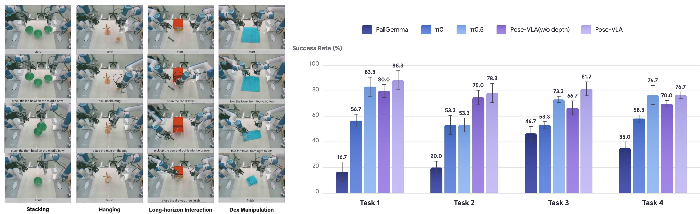
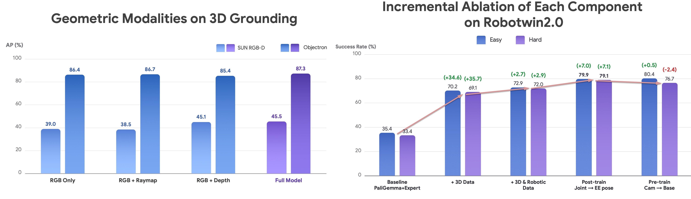

Existing Vision-Language-Action (VLA) models often suffer from feature collapse and low training efficiency because they entangle high-level perception with sparse, embodiment-specific action supervision. Since these models typically rely on VLM backbones optimized for Visual Question Answering (VQA), they excel at semantic identification but often overlook subtle 3D state variations that dictate distinct action patterns.
To resolve these misalignments, we propose Pose-VLA, a decoupled paradigm that separates VLA training into a pre-training phase for extracting universal 3D spatial priors in a unified camera-centric space, and a post-training phase for efficient embodiment alignment within robot-specific action space.
Extensive evaluations demonstrate that Pose-VLA achieves results on RoboTwin 2.0 with a 79.5% average success rate and competitive performance on LIBERO at 96.0%. Real-world experiments further showcase robust generalization across diverse objects using only 100 demonstrations per task.

Pipeline of Pose-VLA. Pose-VLA decouples VLA training into: (1) Pre-training for extracting universal 3D spatial priors in a camera-centric space, and (2) Post-training for embodiment alignment. The VLM predicts a structured sequence $\mathcal{S} = (\tau_1, \dots, \tau_T)$ via next-token prediction, where each tuple $\tau_t = \{\mathbf{c}_t, \mathbf{b}_t, \mathbf{p}_t\}$ consists of a category $\mathbf{c}_t$, 2D box center $\mathbf{b}_t$, and camera-centric pose $\mathbf{p}_t$. To enhance spatial reasoning, auxiliary 3D geometry priors are integrated via additive fusion with RGB embeddings, analogous to positional encodings. This unified format enables seamless knowledge transfer from diverse 3D datasets to robotic domains, achieving robust alignment with minimal demonstrations.



While the table above reports results under a strict 80k-step training budget for fair baseline comparison, the Pose-VLA architecture demonstrates exceptional scalability and robustness. Extended training (100k steps, batch size 192, chunk size 16, executed step 12) unlocks a new performance upper bound across all 50 RoboTwin tasks:


@misc{lin2026posevla,
title={Universal Pose Pretraining for Generalizable Vision-Language-Action Policies},
author={Haitao Lin and Hanyang Yu and Jingshun Huang and He Zhang and Yonggen Ling and Ping Tan and Xiangyang Xue and Yanwei Fu},
year={2026},
eprint={2602.19710},
archivePrefix={arXiv},
primaryClass={cs.RO},
url={https://arxiv.org/abs/2602.19710}
}